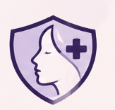

Advanced Screening Assistant
Please enter your profile details
Select an area for assessment:
Please evaluate these physical visual features before scanning:
Please answer a few questions about how the lesion feels and looks: